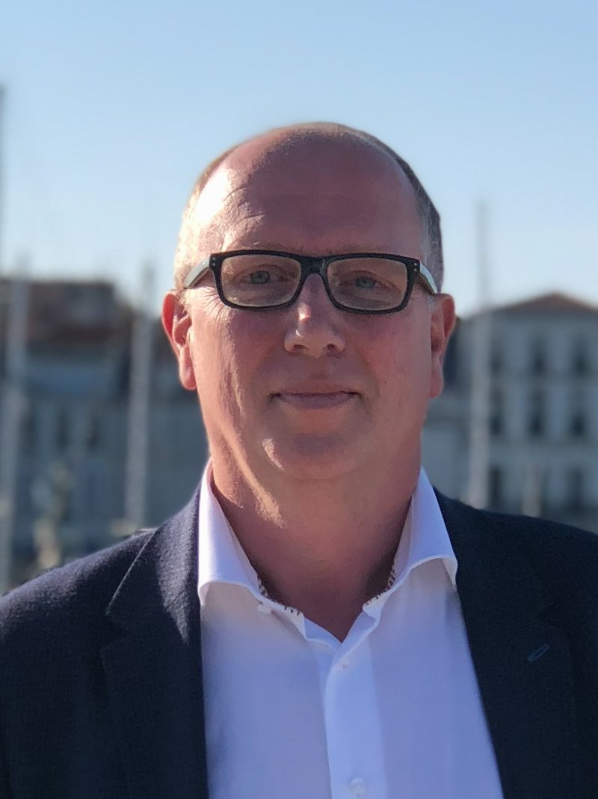
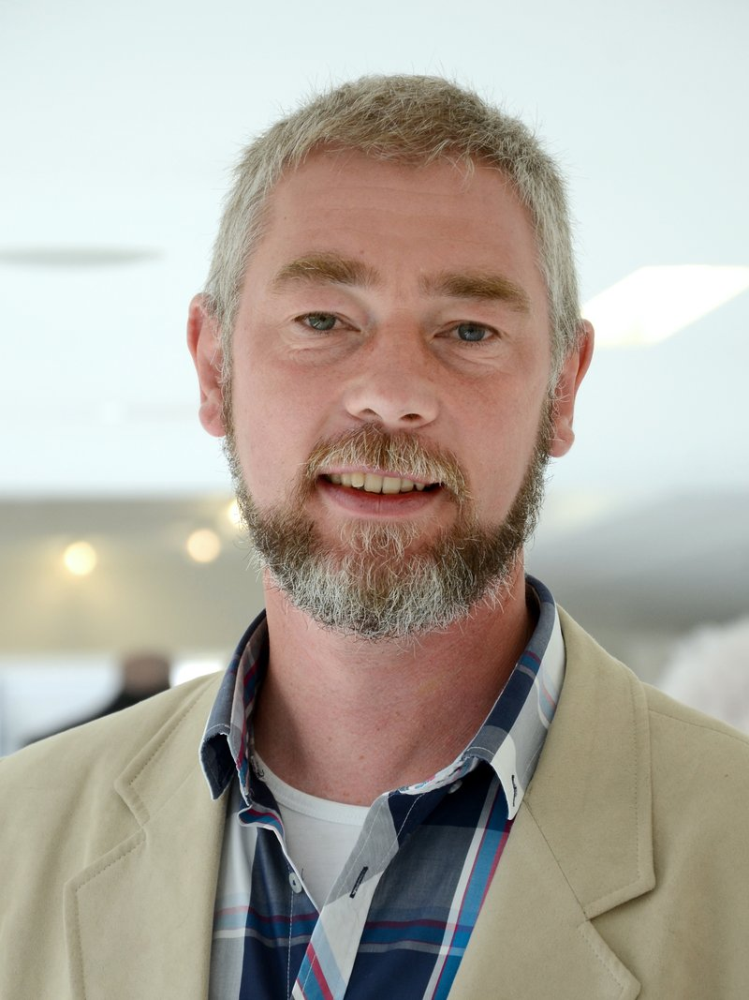

CO2CirculAir was founded about five years ago by specialists in membrane technology, among them former researchers at TNO, the Netherlands Organisation for Applied Scientific Research.

Board
Berno Ram, CEO
Berno Ram is a chemical engineer with more than 40 years of international experience in technology, sustainability, business development and commercial leadership. As CEO of CO2CirculAir he leads the company in making direct air capture more energy-efficient, scalable and economically viable. His focus is on bringing the technology to industrial application and building the partnerships needed to accelerate the transition towards a circular carbon economy.

Board
Eric van Sonsbeek, CTO
Eric van Sonsbeek is a chemical engineer with over 30 years in industrial and municipal water technology, at engineering and water solution companies. His expertise covers membrane and electrical, physical-chemical and biological separation technologies for water purification and treatment, with a focus on industrial scale-up. He has been involved in several successful introductions of new water and wastewater technologies and in the execution of very large installations.
Shareholders
The membrane specialists behind the company.
Berend ter Meulen MSc
Berend ter Meulen obtained master's degrees in (bio)chemical engineering at TU Delft and the University of Pennsylvania, USA. He joined Shell Research (KSLA) and worked on various separation processes before moving to TNO, where he started as group leader Process Technology and became head of the Chemical Engineering department. After 20 years he left TNO in 1997 to start MolaTech B.V., an independent consultancy with an emphasis on the application of separation processes. After his retirement he initiated and co-founded CO2CirculAir B.V. in 2020.
Jeffrey Felix MM RM BSc
Jeffrey Felix holds a bachelor's degree in mechanical engineering and a master's degree in marketing, and is a certified Register Marketeer (EQF level 8). He has over 25 years of international experience in thermal separation, crystallisation, extraction and membrane technology. He is one of the founders of CO2CirculAir and focuses on developing cost-effective and innovative direct air capture and green CO2 conversion solutions. Jeffrey is a board member of NMG (Dutch Membrane Society) and of NLGUTS (Netherlands User Group of Separation Technology).
Jan Henk Hanemaaijer MSc
Jan Henk Hanemaaijer graduated as a membrane technologist at the University of Twente and has worked his whole career on membrane applications and materials. He first gained experience in dairy and biotech applications at NIZO (Netherlands Institute for Dairy Research), then worked for 19 years at TNO as senior scientist in chemistry and water applications, where he was head developer of the Memstill membrane distillation project. In 2008 he founded i3 Innovative Technologies BV, supporting industry and research organisations with innovations in membrane separation technology.
Ton Franken PhD
Ton Franken has worked on membrane technology for four decades. He did his PhD on membrane distillation, has worked in research and development ever since, and is founder and director of the Membrane Application Centre Twente in the Netherlands. Ton focuses on the development of membrane modules for the CO2 absorption process.
Jan Tholen MSc
Jan Tholen holds master's degrees in applied physics and in economics. After 16 years in the steel industry and in engineering and construction for environmental technology, he started his own consultancy and construction company, Tholen Ingenieursbureau Membraantechnologie (TIM), in 1991, and the engineering and construction company Elektrolyse Project b.v. in 1993. Jan is founding chairman of NMG (Dutch Membrane Society).